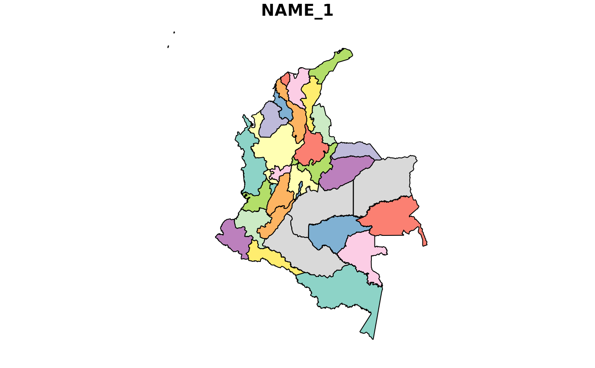

The colmap dataset is a simple feature collection with 33 features and 11 fields. This version was obtained from: GDAM using the sf package.
colmapSimple feature collection with 33 features and 11 fields:
id from original GDAM
id from original GDAM
Colombia.
Departamentos.
class name GDAM.
order name of GDAM.
family name of of GDAM.
name of of GDAM.
name of of GDAM
name of of GDAM
name of of GDAM
polygons of GDAM
colmap <- sf::st_as_sf(gadm(country="COL", level=1, path=tempdir()))
and later apply a polygon simplify using st_simplify with a tolerance of 1km:
colmap <- st_simplify(colmap, preserveTopology = FALSE, dTolerance = 1000)
This dataset is designed to provide users of mammalcol package with a companion map to plot the mammal distribution per departamento.
The dataset is based on the "List of the Mammals of Colombia" by Ramírez-Chaves 2021.
For more information about the "mammalcol" package and the data sources, visit the package's GitHub repository: https://github.com/dlizcano/mammalcol
# Load the mammalcol package
library(mammalcol)
library (sf)
# Access the mammalcol_tab dataset
# data("colmap")
# Display the first few rows
head(colmap)
#> Simple feature collection with 6 features and 11 fields
#> Geometry type: MULTIPOLYGON
#> Dimension: XY
#> Bounding box: xmin: -77.1342 ymin: -4.225097 xmax: -69.3931 ymax: 11.06403
#> Geodetic CRS: WGS 84
#> GID_1 GID_0 COUNTRY NAME_1 VARNAME_1 NL_NAME_1
#> 1 COL.1_2 COL Colombia Amazonas <NA> <NA>
#> 2 COL.2_2 COL Colombia Antioquia <NA> <NA>
#> 3 COL.3_2 COL Colombia Arauca <NA> <NA>
#> 4 COL.4_2 COL Colombia Atlántico <NA> <NA>
#> 5 COL.5_2 COL Colombia Bogotá D.C. Distrito Capital de Bogotá <NA>
#> 6 COL.6_2 COL Colombia Bolívar <NA> <NA>
#> TYPE_1 ENGTYPE_1 CC_1 HASC_1 ISO_1
#> 1 Comisaría Commissiary <NA> CO.AM CO-AMA
#> 2 Departamento Department <NA> CO.AN CO-ANT
#> 3 Intendencia Intendancy <NA> CO.AR CO-ARA
#> 4 Departamento Department <NA> CO.AT <NA>
#> 5 Distrito Capital Capital District <NA> CO.DC <NA>
#> 6 Departamento Department <NA> CO.BL <NA>
#> geometry
#> 1 MULTIPOLYGON (((-69.93615 -...
#> 2 MULTIPOLYGON (((-75.59808 5...
#> 3 MULTIPOLYGON (((-69.42688 6...
#> 4 MULTIPOLYGON (((-74.90938 1...
#> 5 MULTIPOLYGON (((-74.24476 4...
#> 6 MULTIPOLYGON (((-75.55547 1...
plot (colmap["NAME_1"])
